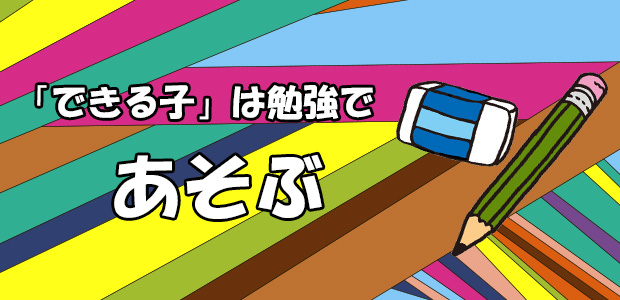

勉強のできる子とはどんな子なのか。
普通に考えれば、テストなど成績の良い子ということになるでしょうが、私たちの感覚では成績が良いイコール勉強ができるとは限らないというのが答えです。
というのは、たとえテストで高得点を取った。通知表で「５」ばかり並んでいるとしても、テストが終わったら大半の知識を忘れ去ったり、習った分野の背景やその意味するところまで理解していなかったら、結局うわべだけの学力でしかないからです。
記憶力や集中力あるいは努力の証明になっても、勉強が身になっていないという点では「できる子」とは言い難いのです。
では、本当にできる子とはどういう子なのか。
ヒントとして昨年私が「トークライブ」で話した内容から引用します。
「……ところで勉強のできる子、本当に我々から見てすごく優秀な子ってどんな子でしょう。他の子と違いがあるとしたらどこが違うのか。皆さんお分かりですか？
我々教える側からすると、優秀な子というのは実は勉強している子ではない。
いや、勉強していないというのではなく、勉強を勉強だと思っていない子。本人的には勉強だと意識せず楽しんでやっている、面白いから興味関心のおもむくまま次々勝手に進めている、そういう子なんですね。
そう、ゲーム感覚に近い。ゲームに熱中する子とメンタリティは変わらないわけです。
勉強を勉強だと思わず楽しんでやっている子が最強のできる子なのです……」
要するに「本当の意味で勉強のできる子」は勉強をゲームのように楽しんでいる。勉強が「良い成績を取るための手段、道具」ではなく、勉強それ自体を楽しいからしているという感覚。勉強を趣味の延長線上に位置づけている。それが私たちの「できる子」の定義です。
勉強は人間だけに許された遊び
本物のゲームならたいていの子どもは夢中になってやるでしょう。
趣味なら誰でもひとつやふたつ熱中できるものを持っているはずで、そういう自分の関心事は自然に上達するものです。
たとえば鉄道オタク！（笑）
彼らは鉄道のことなら、列車の種類や形式、駅名、時刻表に至るまで何でも知っています。知っているだけでなく、乗りたい列車、見たい駅があればそれこそどんなに遠くでも出かけていくに違いありません。
やがて興味は鉄道の歴史やそれを生み出した社会的要因にまで至るでしょう。
彼らは強いられて鉄道の「勉強」をしているわけではないでしょう。
ただ好きだから調べる。楽しいから覚える。
結果として深い知識が身に付き詳しくなったに過ぎない。
たとえ傍からは「すごい努力」に見えようとも。
勉強も原理的には全く同じです。
何よりも先に興味関心がある。
関心があるから調べる。楽しいから知識や方法が頭に入ってくる。理解が深まると喜びも大きくなり、さらに先を知りたくなるという好循環が起こる。結果として「成績」がアップする。
キーワードは、興味関心そしてゲーム感覚つまり遊び心。
勉強とは人間だけに許された高度な知的ゲームである、遊びである！！
この精神を持っている人がすなわち「できる人」であるといえましょう。
「しかし、勉強は趣味やゲームと違う！そんな楽しくやれるものではないよ…」という声が聞こえます。
確かに勉強は趣味と違って興味のある人だけやれば良いという自由がありません。
人は一定年齢に達したら誰でもが学校というものに行かされ強制的に学ばされるものだからです。
もうそれだけで興味関心の大半は吹き飛んでしまうかも知れません。
教育制度の矛盾ですね。
ましてテストのため、受験のためという限定された勉強目的があることで、ますます勉強を楽しんでやるという姿勢から遠ざかってしまうわけです。
しかし、そんな中でも勉強を純粋に「趣味」として楽しむ子も現実にいて、そういう子は受験でも成果を上げ長期的にも高い学力を維持していることが多いことは確かです。
だから「どうすれば勉強する子になりますか」という前に、子どもが勉強そのものに興味をもち、楽しんで学ぶようになる、そのための環境づくりこそが「できる子」になる最も大切な要素ですよと答えるしかありません。
手前味噌ですが、だから私は塾においても知識を詰め込むよりも背景や歴史について触れることで、なるべく生徒たちが興味を感じる工夫をしてきたつもりです。
でも、その際壁となるのは親や先生など周囲の大人たちが、むしろ勉強を「楽しいもの」と思っていない現実の方なのです。
本当は…勉強を難しく考える必要などないのです。勉強を深刻にとらえる必要もありません。
ゲーム（趣味）のように楽しんでしまえばよいのです。
頭の良し悪しさえ関係ありません。
私たちはあまりに勉強に重要性をもたせ過ぎています。入試のこと。良い学校には入ること。安定した生活。それら将来の幸福への条件。あまりに余計なものをたくさん背負わせて重くしているのです。
勉強とは本来、知的遊戯。ゲームであり遊びなのです。
もう一度、原点にかえってみませんか。